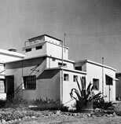
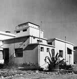

HISTORIA
Frutarom Palestina Ltd., como fue conocida en un principio, fue fundada en 1933 gracias al impulso del Profesor Haim Weizman, el primer presidente del Estado de Israel y químico de reconocida carrera. En sus principios, la empresa combinaba el cultivo de las plantas aromáticas y flores con la extracción y destilación de sabores, ingredientes finos y aceites esenciales.
Galeria de imagenes
 

Más tarde, en 1952, los activos de la compañía fueron adquiridos por Electroquímica Industrias Ltd., un fabricante de productos químicos industriales con sede en Israel, convirtiéndose Frutarom en una división de la empresa.
En 1973, ICC Industries, un holding industrial internacional con sede en los Estados Unidos, adquirió la propiedad de EIL.
A mediados de la década de 1980, Frutarom adoptó una nueva dirección y estableció una estrategia dirigida a aumentar las operaciones de la compañía en todo el mundo, con el fin de convertirse en una importante empresa multinacional de sabores y finos ingredientes.
A finales de 1980, Frutarom tomó la decisión estratégica de ampliar su crecimiento a través de adquisiciones y, en mayo de 1996, Frutarom se separó de EIL, convirtiéndose en una compañía pública que cotiza en la TASE. ICC Industries mantuvo su accionariado de control después de la escisión.
Desde el 1 de enero de 2003, la empresa se encuentra en el Índice TA100 de la TASE y en el 2005 llegó a ser listada en la Bolsa de Valores de Londres.
Durante el 2006, Frutarom logró un impresionante hito y se convirtió en una de las 10 mayores compañías globales de sabores y fragancias.